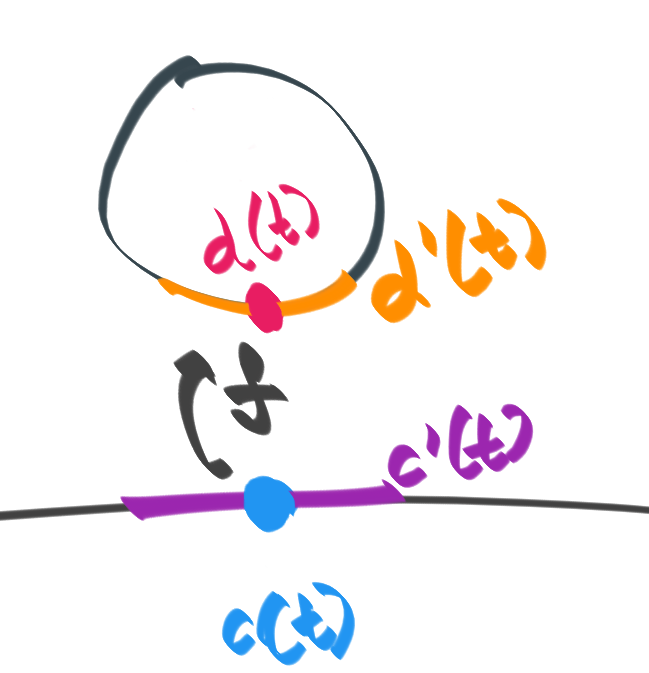

The Jacobian
In this article, I'm going to motivate a geometric quantity known as the Jacobian you may have seen in multivariable calculus. It shows up without explanation when one solves multiple integrals; little explanation is given to what it means . At the end of reading this, if you knew what a Jacobian is, you'll have a sense of what it really means. If you didn't, even better --- you'll learn what the Jacobian is!
Let's dive in. To discuss the Jacobian, we first need a transformation. A prototypical example the transformation that squeezes the entire plane into the unit circle. This is given by \( f(v) \equiv v/|v| \) where \( v \) is a 2D vector, or a point on a plane. Written in terms of coordinates, we make the substitution \( v \mapsto (x, y) \), and the length of the vector \( |v| \mapsto \sqrt{x^2 + y^2} \). This yields the expression \( f(x, y) \equiv (x/\sqrt{x^2 + y^2}, y/\sqrt{x^2 + y^2}) \). To get a very visceral sense of what this function does, let's think about it this way: distribute pink-colored points randomly, and then transform using \( f\). This gives a sense of how \( f \) crumples the unit plane onto the unit circle.
However, there's another way to view this transform, which will be slightly more fruitful for us in the future; We're going to look at how this function $f$ transforms curves, because a curve is the most primitive object that has notions of continuity, smoothness, and all other nice geometic properties we know and love from calculus. We have a pink curve that moves around. This curve is mapped by \( f \) to the blue curve that lies entirely on the unit circle. Watching this transformation gives us a sense of what geometry the mapping \( f \) preserves and destroys
To watch more closely, let's consider two extreme cases. First, where the pink curve is perpendicular to the circle. Here, we see below that that the projection in blue vanishes. Regardless of however long our pink curve is, the projection is always just a single point. A curve that is perpendicular to the circle will have zero projection.
The other case we consider is where the curve is tangent or parallel to the circle. Here, we find the projection of the pink curve to be very long, as the pink curve is able to cast a long shadow onto the circle.
Finally, if you wish to play with the transform, I've left Best viewed on the desktop where you can draw a curve with your mouse. The curve after $f$ is applied, is displayed in blue.
Transformation of derivatives along a curve
We now have a handle on how continuity is transformed. Let's now try to understand how tangents or derivatives are transformed, since differentiability comes right after continuity in Differential calculus. To explore this, let's draw the simplest curve possible: a straight line. Let's see where this curve is mapped to by \( f \), and then draw the mapped curve's tangents.
But, what even is a tangent? Calculus tells us that it's a straight line that just touches our curve. So we'll draw the tangent as a straight line to our curve, then push the tangent onto the circle using \( f \) to see what it looks like after the transformation.
We represent the straight line as function $c: [0, 1] \rightarrow \mathbb R^2$; $c(t) \equiv (t, 0)$. That is, it's a curve with a point that moves along the $x$ axis as $t$ goes from $0$ to $1$. Let's plot the point that moves, along with a straight line at that point, and see how this gets mapped:
We see that the length of the orange tangent on the circle is not constant, even though the length of the purple tangent is constant! As the blue point comes closer to the circle, the orange tangent attached to the pink point is longer, since the pink point moves faster on the circle. As the blue point goes farther away from the circle, the length of the orange tangent grows ever shorter, while the speed of the pink point on the circle crawls to a halt. Can we calculate this somehow?
Calculating the tangent on the circle
We started with the blue point on the curve curve $c(t) \equiv (t, 0)$. We then drew a blue tangent, $c'(t) = (1, 0)$. This was the blue line of constant length. Next, we drew the analogous pink point on the curve. This was computed as $d(t) \equiv f(c(t))$, since we took a point on the curve $c$ and saw where it lands due to $f$'s action. Next, we differentiated this curve $d(t)$ to get the pink line $d'(t)$. We wish to relate $c'(t)$ and $d'(t)$.
In the concrete case, we find: $$ \begin{align*} & d'(t) = \\ & \text{(defn of $d$)}\\ & = (f(c(t))' \\ &= \frac{d f(c(t))}{dt} \\ & \text{(substitute $c(t) = (t, 0)$)}\\ &= \frac{d f(t, 0)}{dt} \\ & \text{(substitute $f$)} \\ &= \frac{d ((t/\sqrt{t^2 + 0^2}, 0/\sqrt{t^2 + 0^2}))}{dt} \\ & \text{(simplify)} \\ &= \frac{d ((\sqrt{t}, 0))}{dt} \\ & \text{(push derivative inside)}\\ &= \bigg( \frac{d\sqrt{t}}{dt}, \frac{d0}{dt} \bigg) \\ &d'(t) = \bigg (\frac{1}{2\sqrt{t}}, 0 \bigg) \quad \end{align*} $$ Thus, we find that the derivative of the curve $d(t)$ is $d'(t) = (1/2\sqrt{t}, 0)$. This grows smaller as $t$ grows larger in size, mimicking what we saw. As we grow farther away from the center, the pink line on the circle grew smaller and smaller.
Transformation of derivative with fixed basepoint
The math tells us that at each point, the derivative is $d'(t) = (1/2\sqrt{t}, 0)$. This means that for a chosen point , say $t = 1$, the derivative is going to be $$d'(t=1) = (1/2\sqrt 1, 0) = (1/2, 0).$$ The derivative of the original curve at the same point is $c'(1) = d/dt(t, 0)|_{t=1} = (1, 0)|_{t=1} = (1, 0)$. That's curious, the new derivative $d'(t)$ seems to be a scaled proportionally from the old derivative: $$ d'(t) = (1/2, 0) = 1/2(1, 0) = 1/2 c'(t). $$ This means that the tangents on the straight line are proportionally related to tangents on the circle. Is this true? Let's watch.
It does seem to be true; as we vary the length of the purple tangent line on the line segment, the length of the orange tangent line on the circle grows proportionally! Is there something special about the straight line? Let's try to see what happens in general.
Generalizing our computation
Previously, we used the concrete definition of $f(x, y)$ and $c(t)$ that we knew to compute the derivative $d'(t)$. What happens if we perform the same derivation in the abstract? This should tell us how to compute $d'(t)$ in terms of $f(x, y)$ and $c(t)$. We begin by thinking about $c(t) : [0, 1] \rightarrow \mathbb R^2$. It's a little awkward to deal with, because it produces two outputs . Let's break $c(t)$ into two functions, $c_x(t)$ and $c_y(t)$, so that $c(t) = (c_x(t), c_y(t))$.
Similarly, we had $f: \mathbb R^2 \rightarrow \mathbb R^2$. Let's break this into $f_x(x, y): \mathbb R^2 \rightarrow \mathbb R$ and $f_y(x, y): \mathbb R^2 \rightarrow \mathbb R$ such that $f(x, y) = (f_x(x, y), f_y(x, y))$. This gives us two functions $f_x, f_y: \mathbb R^2 \rightarrow \mathbb R$ which takes two inputs and produces a single output.
We now have the simplifications we need to carry out our "concrete proof", completely abstractly. Instead of substituting $c(t) = (t, 0)$, we will substitute $c(t) = (c_x(t), c_y(t))$. Similarly, instead of substituting $f(x, y) = (x/\sqrt{x^2 + y^2}, y/\sqrt{x^2 + y^2})$, we will substitute $f(x, y) = (f_x(x, y), f_y(x, y))$ and carry out the proof. This yields: $$ \begin{align*} & d'(t) = \\ & \text{(defn of $d$)}\\ & = (f(c(t))' = \frac{d f(c(t))}{dt} \\ & \text{(substitute $c(t) = (c_x(t), c_y(t))$)}\\ &= \frac{d f(c_x(t), c_y(t))}{dt} \\ & \text{(substitute $f(x, y) = (f_x(x, y), f_y(x, y)))$} \\ &= \frac{d((f_x(c_x(t), c_y(t)), f_y(c_x(t), c_y(t))))}{dt} \\ & \text{(push derivative inside)}\\ &= \bigg(\frac{df_x(c_x(t), c_y(t))}{dt}, \frac{df_y(c_x(t), c_y(t))}{dt} \bigg) \\ \end{align*} $$
At this stage, we're going to whack the expression with the only hammer we have in calculus: the chain rule! This gives us: $$ \begin{align*} &= \bigg(\frac{df_x(c_x(t), c_y(t))}{dt}, \frac{df_y(c_x(t), c_y(t))}{dt} \bigg) \\ &d'(t) = \bigg (\frac{df_x}{dx}\frac{dc_x(t)}{dt} + \frac{df_x}{dy} \frac{dc_y(t)}{dt}, \frac{df_y}{dx} \frac{dc_x(t)}{dt} + \frac{df_y}{dy}\frac{dc_y(t)}{dt} \bigg) \\ \end{align*} $$ We see that this splits into two "kinds" of derivatives: terms of the form $(dc_x/dt, dc_y/dt)$, and of the form $\{ df_{x, y}/d_{x, y} \}$. We can write the above as: $$ \begin{align*} &d'(t) = \bigg (\frac{df_x}{dx}\frac{dc_x(t)}{dt} + \frac{df_x}{dy} \frac{dc_y(t)}{dt}, \frac{df_y}{dx} \frac{dc_x(t)}{dt} + \frac{df_y}{dy}\frac{dc_y(t)}{dt} \bigg) \\ &d'(t) = \begin{bmatrix} df_x/dx & df_x/dy \\ dg_x/dx & dg_x/dy \\ \end{bmatrix} \begin{bmatrix} dc_x/dt \\ dc_y/dt \end{bmatrix} \end{align*} $$ So we see that we can write $d'(t)$ as a matrix multiplication (linear transformation) of $(dc_x/dt, dc_y/dt)$ with the Jacobian of $f$, $J \equiv \begin{bmatrix} df_x/dx & df_x/dy \\ dg_x/dx & dg_x/dy \\ \end{bmatrix}$. This philosophically means that the new tangent is a linear transform of the old tangent.
Wrapping Up
We began exploring what it means to have a complicated transformation and how to visualize it. We then thought about curves, and how curves are transformed under this relationship. This naturally got us thinking about derivatives, where we noticed that the relationship between the derivatives of the original curve and the transformed curve appear to be linear. This culminated in us computing the Jacobian, which precisely quantified the linear relationship in the tangents to the curve.
- If you want more such articles, check out bollu.github.io/mathemagic
- Follow me on github at github.com/bollu
- See more at bollu.github.io
Finally, I end with an interactive toy; Click to select a base point. Move the cursor to draw blue line segments. See the prediction by the Jacobian (in purple) and the real projection (in orange), and revel in the fact that the pink Jacobian prediction and the real orange projection do indeed overlap for small approximations!